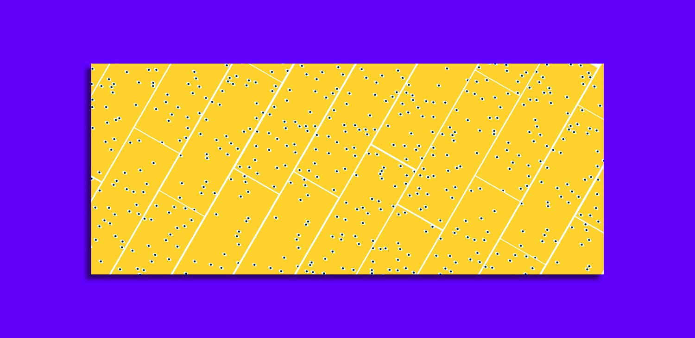
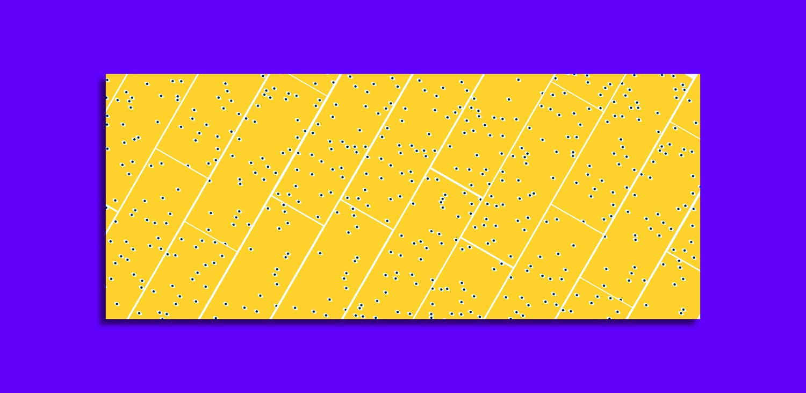
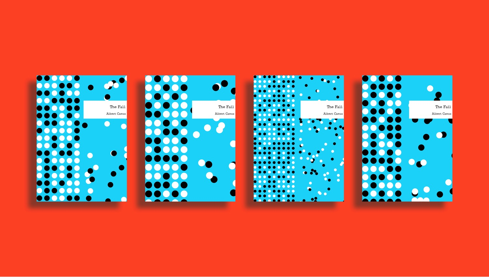
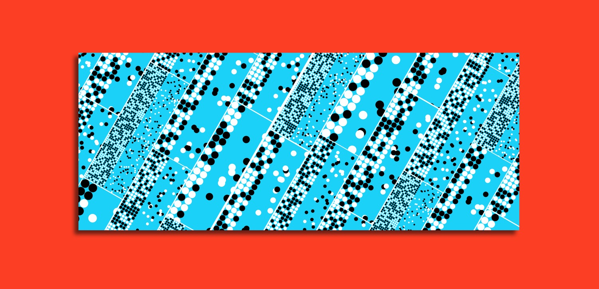
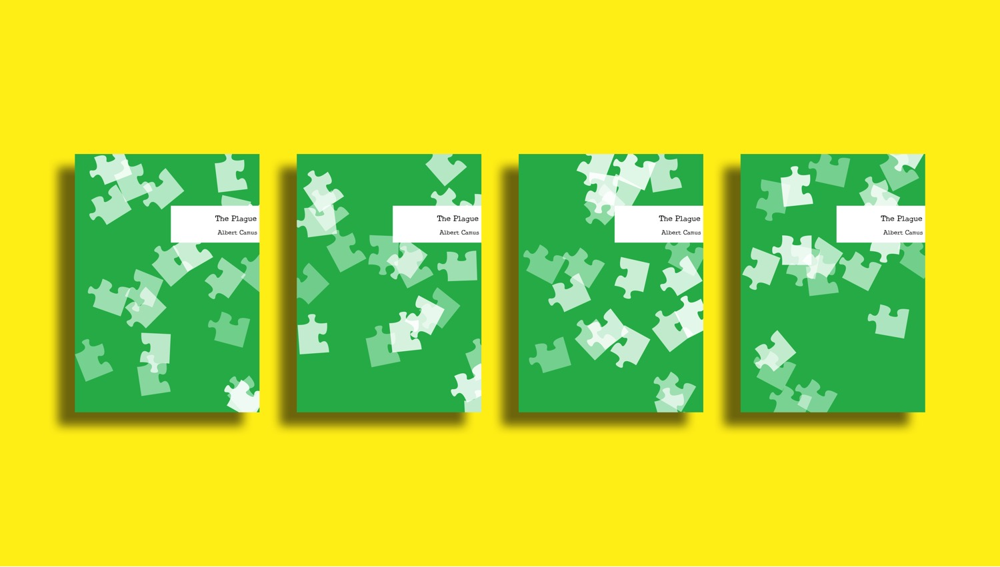
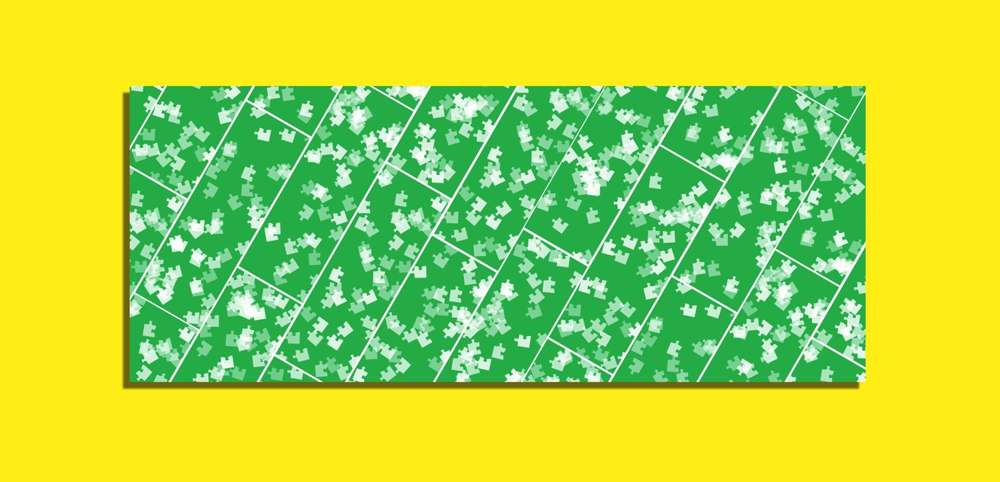
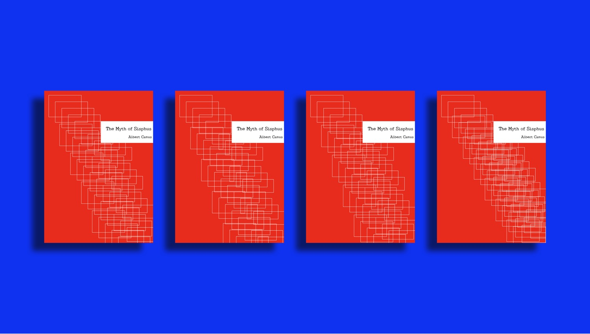
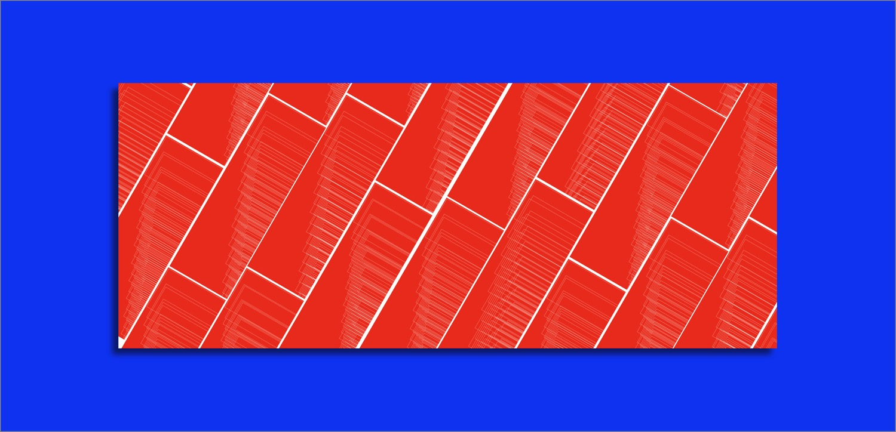

Generative Book Covers for Albert Camus
Individual Work
Time 1 month | 2018
Toolkit P5.JS
Instructor Rune Madsen
Context Interactive Media Arts, New York University Shanghai
Project Description
Generative book covers and bookmarks designed for four books written by Albert Camus - The Stranger, The Fall, The Plague, and The Myth of Sisyphus. Each one extracts one symbol from the meaning of the book and uses code to create different visuals. In this way, each one has its own unique graphic and can be sold as limited editions.
Books, Symbols, and Meanings
I summarized every book with one key word - separation, chaos, ambivalence, and repetition - and used symbols and shapes to represent each of them.
Many consider Camus’ book to be obscure and difficult to read, so I use vivid and saturated colors to attract people’s attention and raise their desires and curiosities to read the books.
The Stranger: [seperation] staircase - the desperate path protagonist chooses to go after; eyes - the moral judgments come from outside world
 

The Fall: [ambivalence] black and white dots spreading on the canvas, with one side chaotic and another in order.
 The Plague: [chaos] puzzles - unresolvable chaotic situation
 The Myth of Sisyphus: [repetation] recursion - the loop of everyday life.
 